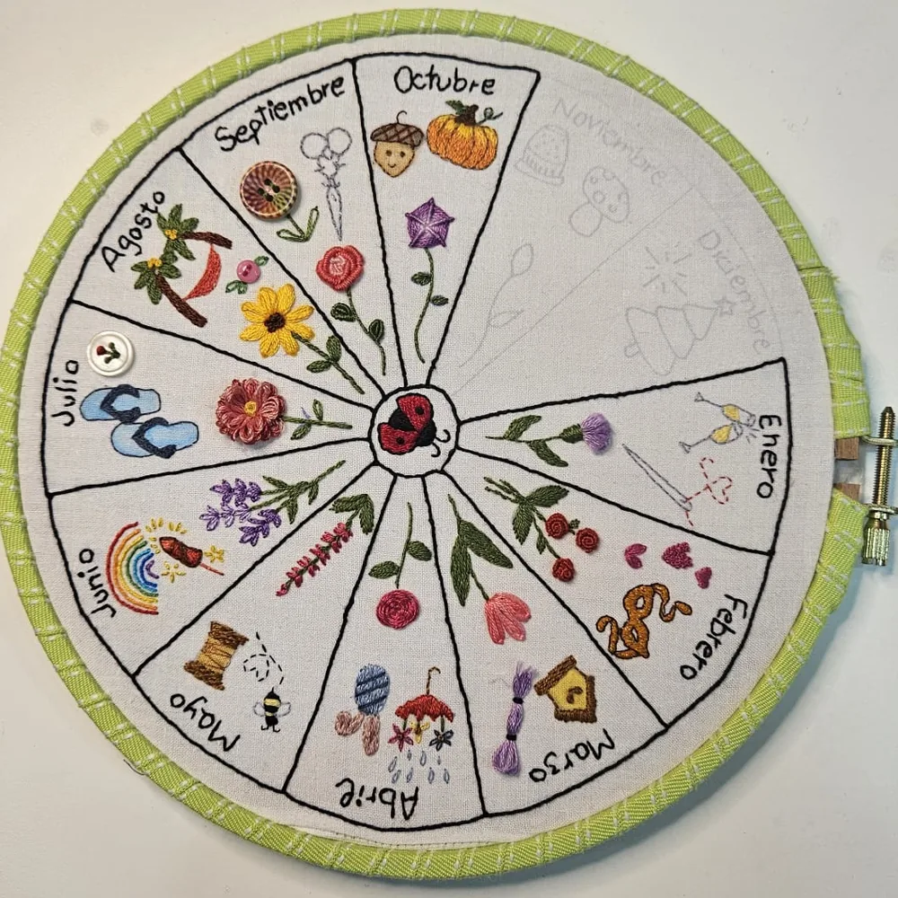
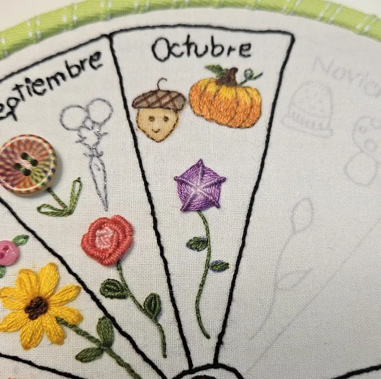

Online · Empieza cuando quieras
Anuario Bordado
12 meses, 12 flores y muchos puntos por aprender.
Cada mes bordamos juntas una flor diferente y aprovecho ese proyecto para enseñarte puntos y técnicas de bordado nuevos.
Qué incluye
- Una flor nueva cada mes
- Aprendes diferentes puntos de bordado
- Con mis explicaciones y tutoriales en vídeo
- A tu ritmo y sin prisas
- No necesitas experiencia previa
Puedes empezar cuando quieras y disfrutar del bordado mes a mes.
¿Te apetece crear tu propio Anuario Bordado conmigo?